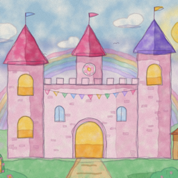

Maths Castle is a maths game for young children on iPad and iPhone. Children play eleven short games (counting, one more and one fewer, comparing, sums, missing numbers, number patterns, the number line, ten frames and dice) to earn gold coins and stars, then spend them on treasures and friends for a painted castle with six rooms to open. Princess Rosie shows how each game works the first time, and levels move up and down with how your child is doing.
Press and hold the ⚙️ button in the top bar until the bar along its bottom fills (about a second), then answer the grown-up question (a times-table sum written in words). A quick tap does nothing, so little fingers don't open it by accident.
No. The whole game works without an account and without an internet connection; progress is saved on the device. Signing in is optional and only adds two things: Maths Garden levels, and progress synced between devices.
Grown-ups settings → Account, then sign in with a Maths Garden email and password. Accounts are made on the Maths Garden website. The castle links to the child on the account whose name matches the castle's name; if none matches you can pick one or add the child. Progress then syncs whenever the app opens or closes.
Yes. Grown-ups settings lists every game with its level; tap Easier or Harder. "Practise one game" lets your child pick a single game to play.
Grown-ups settings → Move progress copies a link. Open that link on the other device with Maths Castle installed.
Grown-ups settings → Start again (tap it twice). This clears the castle on this device (and, if signed in, the synced copy).
Grown-ups settings → Account → Delete account, then confirm. This removes the account, its children and all their saved progress and levels. You can also email us from the account's address and we will delete it for you. See the privacy policy for details.
Hold three fingers on the screen for about a second and a half. After the same grown-up question, a form opens where you can type a note; it shows exactly what will be sent with it. Or email us.
Use the speaker button in the top bar to turn the sound on or off, or the device's volume buttons.
No. Maths Castle has no ads, no in-app purchases and no tracking. The shop in the game uses only coins earned by playing.
Email brambruesch@nickholzherr.com. We usually reply within a few days.